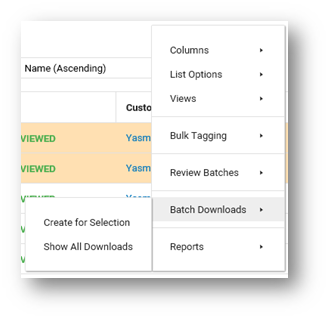
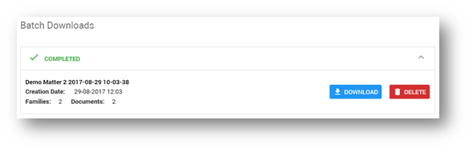
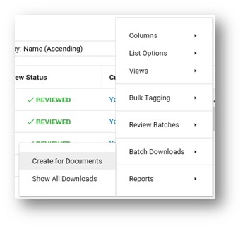
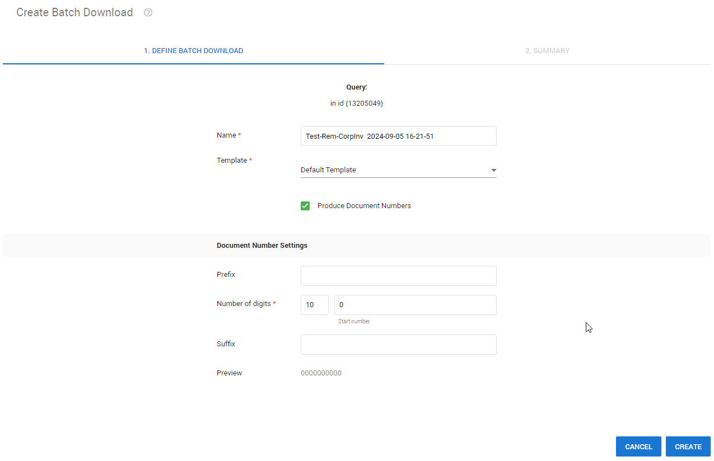
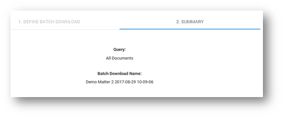

In Document List, select the Settings icon  .
.

For an overview of all created downloads, click Show All Downloads.

On the Batch Downloads page you can view all batches (in progress, completed, or failed). You can delete batches or download them as a zip file.

To immediately create a new Batch Download, select Create for Documents/Selection. If you did not select specific documents, you will download all documents present in Document List, including the documents not visible due to paging.

Define the batch you want to download.

-
Adjust the Name if needed.
-
Select the Production Template you want to use.
-
Depending on your template, document numbers may be used in the naming of the document. To produce numbered PDF files using the PDF (System) template, make sure the checkbox Produce Document Numbers is selected.
If this checkbox is not selected, the original name of the document is used.
-
Define the Document Numbers Settings. This is how the PDF files will be numbered.
Click Create. A summary is shown.

Click Done.